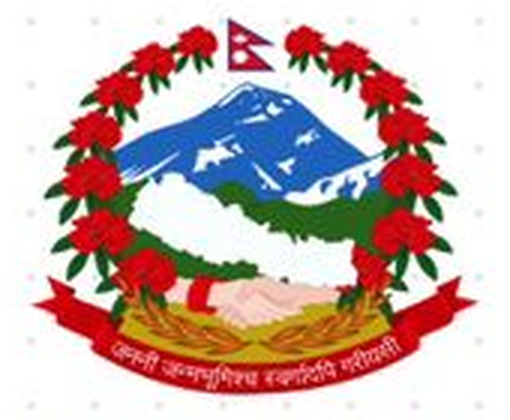

नेपाल सरकारGovernment of Nepalअर्थ मन्त्रालय · सिंहदरबार, काठमाडौँMinistry of Finance · Singha Durbar, Kathmandu
वेबसाइट प्रोटोटाइप तथा प्रस्ताव · २०८३ भदौ २१Website prototype & proposal · 6 September 2026
रसुवा–भोटेकोशी बाढी अपडेटMoF Rasuwa–Bhotekoshi Flood Update
MoF Rasuwa–Bhotekoshi Flood Updateअर्थ मन्त्रालय — रसुवा–भोटेकोशी बाढी अपडेट
प्रधानमन्त्री दैवी प्रकोप उद्धार कोष / प्रधानमन्त्री राहत कोषमा प्राप्त सहयोग, वैदेशिक सहयोग, खोज तथा उद्धार र सरकारबाट भएका पहलको एकीकृत, प्रमाणित र द्विभाषी सार्वजनिक अद्यावधिक।One verified, bilingual public update for the Rasuwa–Bhotekoshi flood: every contribution to the PM Disaster Relief Fund, foreign assistance, search and rescue data, and every government initiative.
mof.gov.np/rasuwa-flood
गृहपृष्ठHomeHomeगृहपृष्ठ
प्राप्त सहयोगContributionsContributions received
वैदेशिक सहयोगForeign AssistanceForeign assistance
उद्धारRescueSearch & rescue
सरकारका पहलGovernment InitiativesGovernment initiatives
सम्पर्कContactContact
Crimson #C8102E · Navy #003893 · Surface #F4F6FA · Ink #14213D · Mukta typeface · official emblemनेपाली पहिलो, अंग्रेजी दोस्रो · देवनागरी अङ्कNepali first, English second · Devanagari numerals in ने mode